Οδηγός χρήσης HEXIS
Όλα όσα χρειάζεσαι για την πλατφόρμα και τα εργαλεία της — από την πρώτη σύνδεση μέχρι τις αναφορές PDF και τις μετρήσεις στο πεδίο.
Ξεκινώντας
Το HEXIS είναι πλατφόρμα εργαλείων για μηχανικούς, εργολάβους και συνεργεία: διαχείριση εργοταξίου σε πραγματικό χρόνο και μια εργαλειοθήκη που χτίζεις στα μέτρα σου. Δουλεύει σε κινητό, tablet και υπολογιστή — ακόμα και χωρίς σήμα στο εργοτάξιο.
Δημιουργία λογαριασμού
Πήγαινε στο hexis-app.gr και πάτησε «Δωρεάν δοκιμή». Με την εγγραφή ξεκινά 14ήμερη δοκιμή — χωρίς κάρτα — με πλήρη πρόσβαση σε όλα τα εργαλεία της πλατφόρμας.
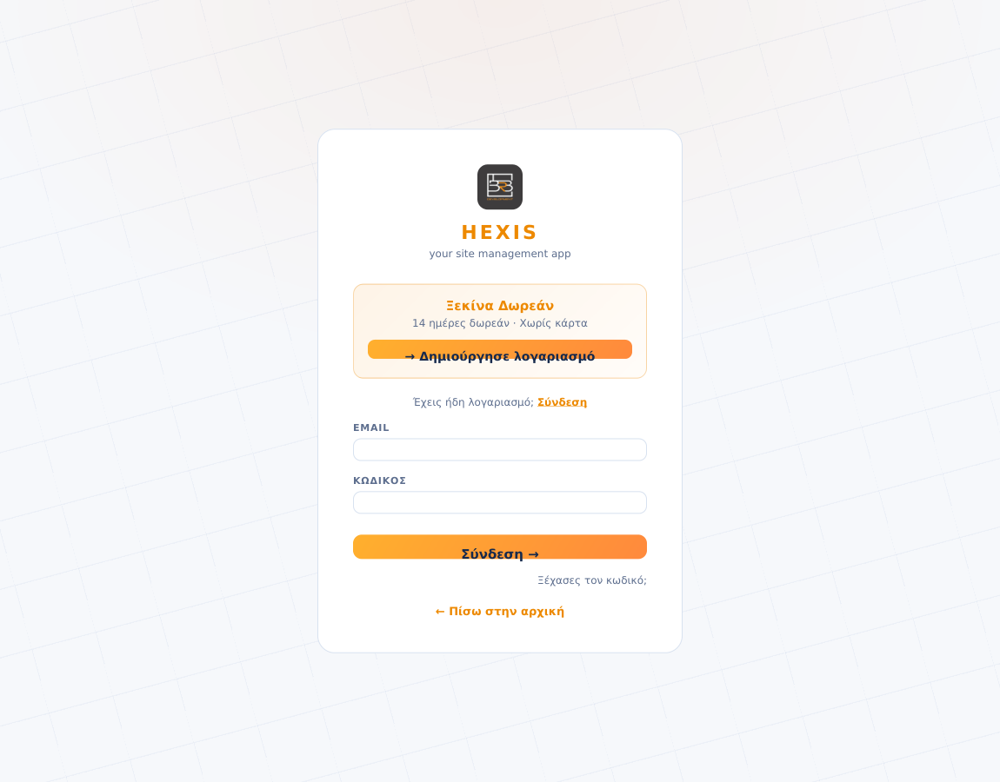
Εγκατάσταση σαν εφαρμογή
Το HEXIS δεν κατεβαίνει από κατάστημα εφαρμογών — εγκαθίσταται απευθείας από το site σε 10 δευτερόλεπτα:
iPhone: άνοιξε το Safari (όχι Chrome) στο hexis-app.gr → πάτησε το κουμπί Κοινοποίησης (τετράγωνο με βέλος ↑) → «Προσθήκη στην οθόνη Αφετηρίας» → «Προσθήκη». Android: άνοιξε το Chrome στο hexis-app.gr → μενού ⋮ πάνω δεξιά → «Εγκατάσταση εφαρμογής» / «Προσθήκη στην αρχική οθόνη».
Το HEXIS Hub
Μετά τη σύνδεση βρίσκεσαι στο Hub — την αρχική οθόνη με όλες τις εφαρμογές. Το μεγάλο πλακίδιο «Διαχείριση Έργων» είναι η καρδιά της πλατφόρμας και περιλαμβάνεται στη συνδρομή σου (Starter/Pro/Studio). Από κάτω βρίσκονται τα εργαλεία (add-ons), που ενεργοποιούνται ξεχωριστά.
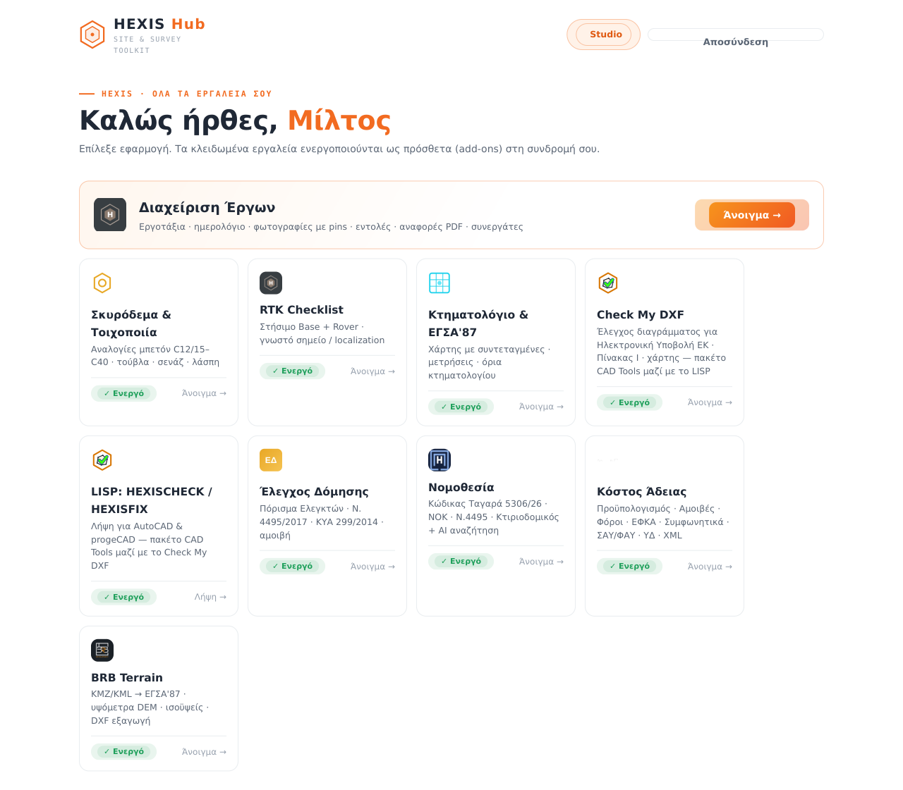
Πώς αγοράζω ένα εργαλείο
Πάτησε στο εργαλείο που σε ενδιαφέρει: ανοίγει η σελίδα παρουσίασής του με τις δυνατότητες και την ετήσια τιμή. Πάτησε «Ενεργοποίηση» — το αίτημά σου καταχωρείται και η ομάδα του HEXIS επικοινωνεί μαζί σου για την πληρωμή. Μόλις ενεργοποιηθεί, το εργαλείο ανοίγει σε όλες τις συσκευές σου για 1 έτος.
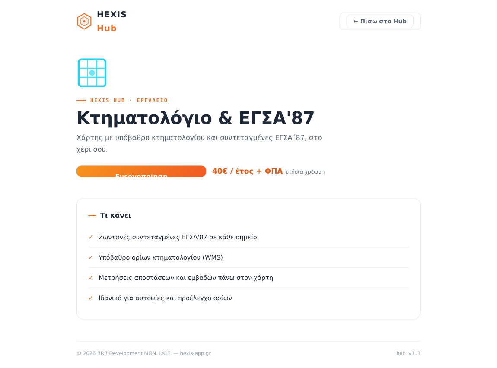
Διαχείριση Έργων
Ο πυρήνας του HEXIS: καταγράφεις εντολές, παραγγελίες και ελλείψεις με φωτογραφίες και πινέζες πάνω στις κατόψεις, συνεργάζεσαι με την ομάδα σου σε πραγματικό χρόνο, και εξάγεις επαγγελματικές αναφορές PDF για τον πελάτη.
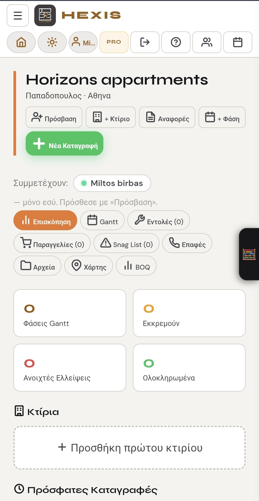
Καταγραφές — Εντολή, Παραγγελία, Έλλειψη
Τρεις τύποι: 📋 Εντολή (εργασία που πρέπει να γίνει), 📦 Παραγγελία (υλικά), ⚠️ Έλλειψη (snag — πρόβλημα που εντόπισες). Η φόρμα έχει όλα τα πεδία σε μία οθόνη: έργο & κτίριο, κατηγορία, παρατηρήσεις (ή πάτησε 🎙️ Φωνητική καταγραφή και μίλησε — το κείμενο γράφεται μόνο του), υπεύθυνο και deadline — όσα λήγουν εμφανίζονται ως ΕΚΠΡΟΘΕΣΜΑ ή «για ΣΗΜΕΡΑ» στην αρχική. Με την αποθήκευση, η καταγραφή συγχρονίζεται αμέσως σε όλες τις συσκευές της ομάδας.
Φωτογραφίες & Βίντεο
Τράβα φωτογραφίες από την κάμερα ή διάλεξε από τη συλλογή — συμπιέζονται αυτόματα και ανεβαίνουν γρήγορα ακόμα και με αδύναμο σήμα. Βίντεο έως 50MB (τράβα σε 1080p). Στην προβολή: πάτημα για zoom 3× στο σημείο, pinch για ελεύθερο zoom. Με το ✏️ γράφεις σημειώσεις πάνω στη φωτογραφία (π.χ. μια διάσταση «13.57») ή σχεδιάζεις ελεύθερα — αποθηκεύονται μόνιμα και φαίνονται και στις αναφορές.
Κατόψεις & Πινέζες
Σύνδεσε κάθε καταγραφή με ακριβές σημείο στην κάτοψη: ανέβασε την κάτοψη στα Αρχεία (JPG/PNG/PDF), χαρακτήρισέ την (είδος, όροφος, κτίριο), και στη Νέα Καταγραφή τοποθέτησε την πορτοκαλί πινέζα με το σταυρόνημα — παίρνει αυτόματο αριθμό. Επιπλέον, σε κάθε φωτογραφία μπορείς να σημειώσεις με μπλε πινέζα τη θέση λήψης της.

Αναφορές PDF
Μέσα στο έργο πάτησε 📊 Αναφορές και διάλεξε περίοδο: Ημέρας, Εβδομάδας, Συνολική ή συγκεκριμένη ημερομηνία. Οι καταγραφές ομαδοποιούνται ανά κτίριο με αριθμημένες φωτογραφίες, οι κατόψεις-roadmap μπαίνουν στο τέλος, και τα βίντεο ως καρέ με κουμπί ▶ + QR code για την τυπωμένη αναφορά. Κάθε αναφορά βγαίνει σε Ελληνικά, Αγγλικά ή Αλβανικά — οι περιγραφές μεταφράζονται αυτόματα με AI και τεχνικό λεξιλόγιο. Στην ενότητα «Λογότυπο γραφείου» ανεβάζεις το δικό σου λογότυπο για όλες τις αναφορές. Αποστολή με WhatsApp ή Email με ένα πάτημα.
Ομάδα, Πρόσβαση & Σχόλια
Η Ομάδα είναι ο κατάλογος μηχανικών/τεχνιτών των καταγραφών· η Πρόσβαση είναι ποιος συνδέεται online να δει το έργο. Δίνεις πρόσβαση με το email του συνεργάτη — μόλις εγγραφεί, το έργο εμφανίζεται στα «Έργα που συμμετέχω» (πράσινη βούλα = μπήκε, κόκκινη = εκκρεμεί). Κάθε καταγραφή έχει συνομιλία σχολίων που βλέπει όλη η ομάδα.
Gantt & Προϋπολογισμός (BOQ)
Με «+ Φάση» ορίζεις εργασίες με έναρξη/λήξη και πρόοδο — τις βλέπεις σε λίστα ή οπτικό χρονοδιάγραμμα ανά μήνα. Στο BOQ εισάγεις Excel με εργασίες και κόστη: η εφαρμογή υπολογίζει Π/Υ, Εκτελεσθέν και Υπόλοιπο ανά κατηγορία — ιδανικό για ενημέρωση πελάτη/επενδυτή.
Χάρτης & Τοποθεσία
Κάθε έργο έχει θέση στον χάρτη: δορυφορική προβολή ESRI, κουμπί Οδηγίες Google Maps, συντεταγμένες ΕΓΣΑ/ΚΑΕΚ, και «Στείλτε την πινέζα» για κοινοποίηση της θέσης στο συνεργείο μέσω WhatsApp/Viber.
Εργαλεία μηχανικού (🧮)
Το πλαϊνό πάνελ έχει 4 καρτέλες: Υπολογιστής (επιστημονικός + 📐 Τοπογραφικά: Απόσταση με γωνία διεύθυνσης σε g/μοίρες, Πύκνωση ανά βήμα ή σε ίσα τμήματα, Επέκταση στην προέκταση ΑΒ — με αντιγραφή Χ/Υ κατευθείαν σε Excel ή CAD), Σημειώσεις εργοταξίου, Βοηθός AI (νομοθεσία, Ευρωκώδικες, τεχνικές λύσεις — και με φωνή), και TOOLS με όλα τα εργαλεία του Hub.
Γλώσσα & Backup
Ολόκληρο το περιβάλλον λειτουργεί σε Ελληνικά ή Αγγλικά (Εργαλεία → Γλώσσα). Από την κάρτα «Αντίγραφο ασφαλείας» εξάγεις με ένα πάτημα όλα τα δεδομένα σου (έργα, καταγραφές, πινέζες + φωτογραφίες) και τα επαναφέρεις όποτε χρειαστεί.
Σκυρόδεμα & Τοιχοποιία
Υπολογιστές ποσοτήτων για επί τόπου χρήση, τρίγλωσσο (ΕΛ/EN/SQ — ακολουθεί και τη γλώσσα του HEXIS) με φωτεινό/σκούρο θέμα: αναλογίες μπετόν για κατηγορίες C12/15 έως C40, τούβλα και σενάζ ανά τύπο τοιχοποιίας (με γέμισμα, ξερολιθιά), και ξεχωριστή καρτέλα για λάσπη/κονιάματα.
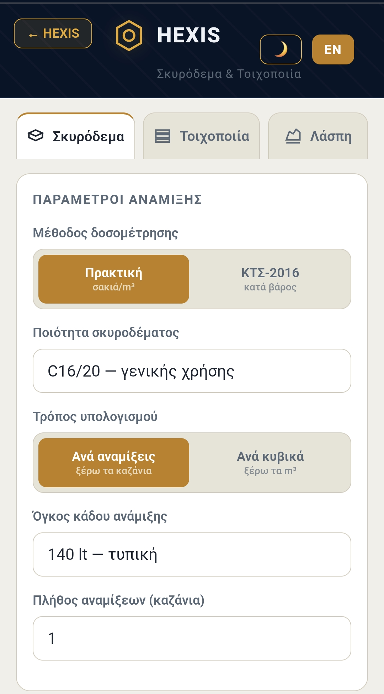
Δίνεις διαστάσεις και παίρνεις σακιά τσιμέντου/ασβέστη, άμμο, νερό, κρυφά σενάζ — και κόστος υλικών με ΦΠΑ 24%, με τιμές που προσαρμόζεις από τα τιμολόγιά σου. Δουλεύει και χωρίς internet.
![]()
RTK Checklist
Λίστα ελέγχου για στήσιμο RTK GNSS (Base + Rover) στο πεδίο — για να μην ξεχνιέται ποτέ τίποτα. Δύο σενάρια: Α · Γνωστό σημείο (στήσιμο σε γνωστή κορυφή) και Β · Localization (προσαρμογή σε τοπικό σύστημα).
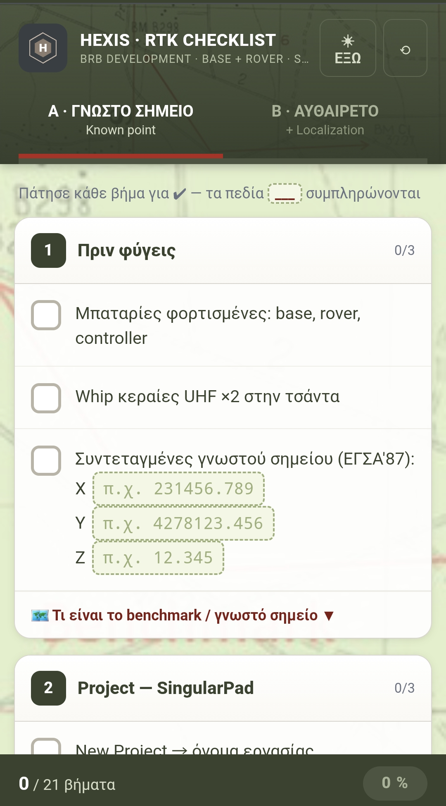
Τσεκάρεις κάθε βήμα καθώς το ολοκληρώνεις — λύση FIX, PDOP, ύψος κεραίας, έλεγχος σε check point. Λειτουργεί πλήρως offline.
Κτηματολόγιο & ΕΓΣΑ'87
Δορυφορικός χάρτης με ζωντανές συντεταγμένες ΕΓΣΑ΄87 και υπόβαθρο ορίων κτηματολογίου (WMS). Μετράς αποστάσεις και εμβαδά απευθείας πάνω στον χάρτη — ιδανικό για αυτοψίες και προέλεγχο ορίων.
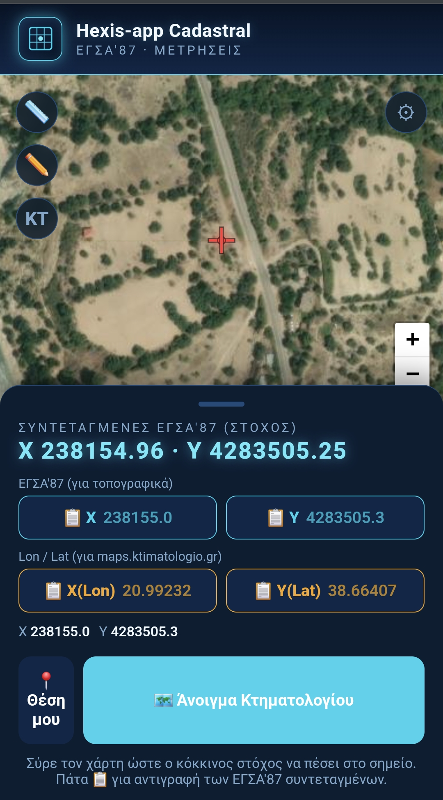
Θα το βρεις σε δύο σημεία: ως αυτόνομη εφαρμογή στο Hub, και μέσα στη Διαχείριση Έργων — στην καρτέλα Χάρτης κάθε έργου με το κουμπί «ΕΓΣΑ / ΚΑΕΚ», κεντραρισμένο στη θέση του έργου.
CAD Tools — Check My DXF + LISP
Πακέτο δύο εργαλείων για αψεγάδιαστη Ηλεκτρονική Υποβολή στο Κτηματολόγιο — με μία ενεργοποίηση αποκτάς και τα δύο.
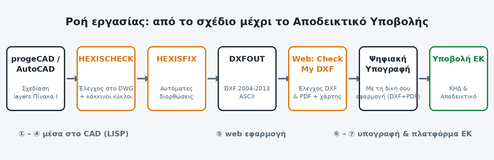
Check My DXF (web)
Προελέγχει τα ψηφιακά διαγράμματα (DXF) και το PDF πριν την Ηλεκτρονική Υποβολή στο Ελληνικό Κτηματολόγιο (ν.4409/2016, άρθρο 40), εφαρμόζοντας τους κανόνες του Τεύχους Τεχνικών Προδιαγραφών ΕΚ (έκδ. 1.3/2024): υποχρεωτικά layers του ΠΙΝΑΚΑ Ι ανά είδος διαγράμματος, επιτρεπτοί τύποι οντοτήτων, κλειστά πολύγωνα, ΚΑΕΚ, όρια ΕΓΣΑ΄87, τοπολογικοί κανόνες, ονοματολογία αρχείων.
Τρία βήματα: 1) Διάλεξε είδος — Τοπογραφικό (Ν.651/77), ΔΓΜ Εγγραπτέας Πράξης ή ΔΓΜ Διόρθωσης/ΤΔΓΜ· για Τοπογραφικό δήλωσε αν η περιοχή έχει λειτουργούν Κτηματολόγιο (καθορίζει το PST_KAEK). 2) Σύρε το DXF — ο έλεγχος τρέχει αμέσως: πράσινο = ΑΠΟΔΕΚΤΟ, πορτοκαλί = αποδεκτό με επισημάνσεις, κόκκινο = σφάλματα με συγκεκριμένη οδηγία διόρθωσης (και εντολή CAD) στο καθένα — και το διάγραμμα εμφανίζεται στη σωστή θέση στον χάρτη. 3) Μόλις περάσει, ξεκλειδώνει ο έλεγχος PDF (§4.6): μονοσέλιδο, dxf+pdf έως 10 MB, ίδιο όνομα με το DXF. Η ψηφιακή υπογραφή γίνεται με την εφαρμογή υπογραφής του μηχανικού, εκτός εργαλείου. Όλα τρέχουν τοπικά στη συσκευή σου.
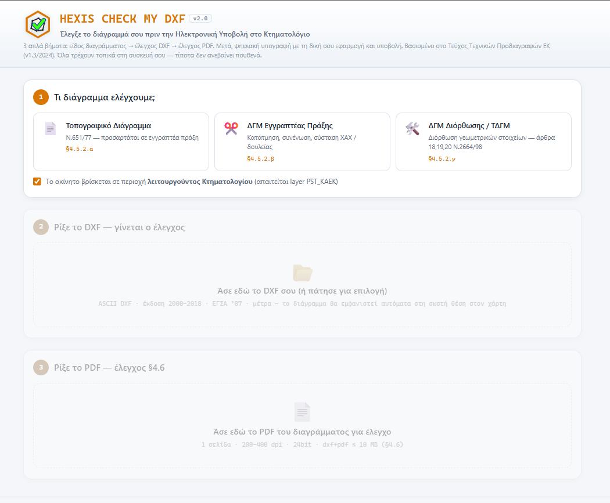
LISP — εγκατάσταση σε AutoCAD & progeCAD
Αντέγραψε το hexis_check_my_dxf.lsp σε μόνιμο φάκελο, π.χ. C:\BRB\LISP\ (όχι Desktop/Downloads). AutoCAD (2004+): εντολή APPLOAD → Load· για μόνιμη φόρτωση Startup Suite → Contents → Add· σε 2016+ αν βγει ειδοποίηση ασφαλείας, Always Load ή πρόσθεσε τον φάκελο στα Trusted Locations. progeCAD: APPLOAD → Add File → Load, και τσέκαρε «Load at startup». Το αρχείο είναι σε κωδικοποίηση Windows-1253 — μην το ξανασώσεις ως UTF-8.
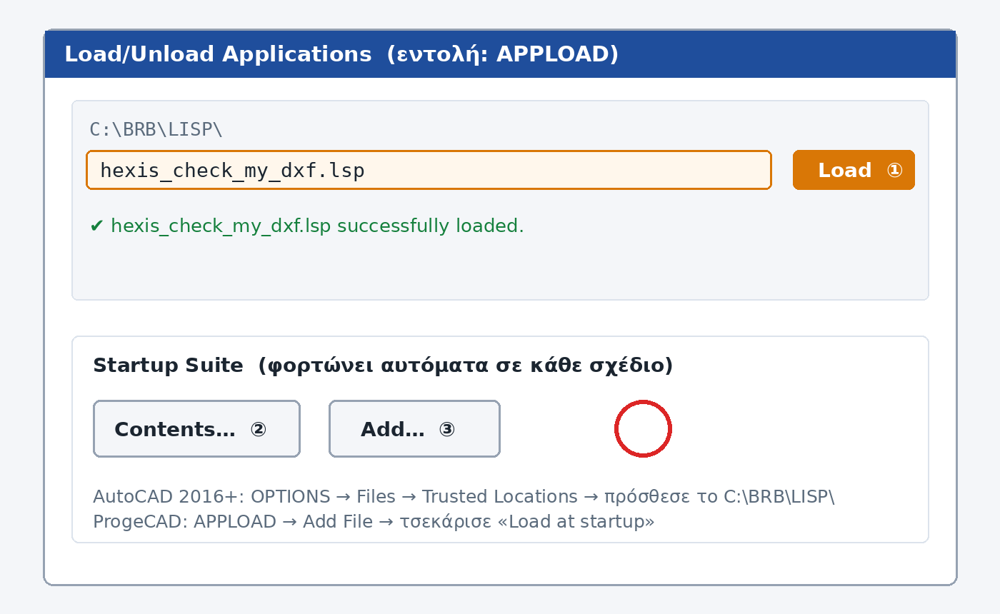
LISP — οι 3 εντολές
HEXISCHECK ελέγχει το τρέχον DWG (ρωτά είδος: TD / PRAXI / DIORTHOSI) — στη γραμμή εντολών βλέπεις μόνο το αποτέλεσμα, ενώ η πλήρης αριθμημένη αναφορά ανοίγει μόνη της σε Notepad. HEXISFIX κάνει αυτόματες διορθώσεις όπου είναι ασφαλές (π.χ. μετονομασίες layers) — μία εντολή UNDO τις αναιρεί όλες. HEXISCLR σβήνει τους κόκκινους κύκλους σήμανσης.
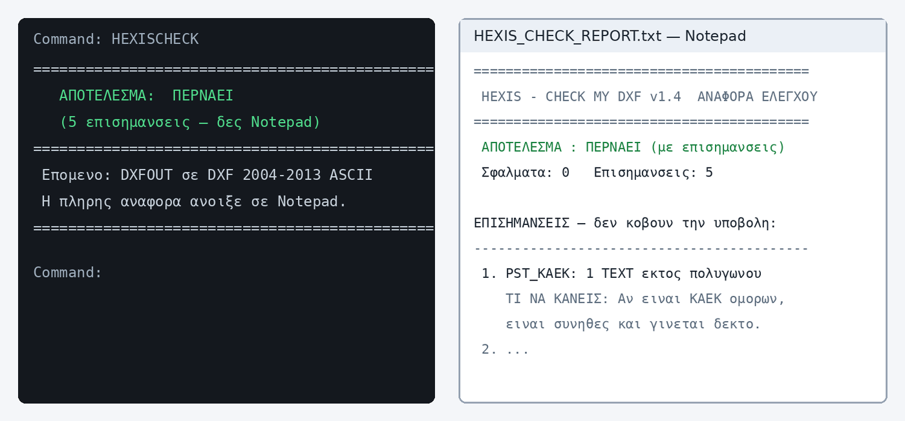
Συχνά: «αλαμπουρνέζικα» ελληνικά στη γραμμή εντολών = λάθος κωδικοποίηση (ξανακατέβασε το αρχικό .lsp)· το DXF δεν φαίνεται στον χάρτη = συντεταγμένες εκτός ΕΓΣΑ΄87 (μετασχημάτισε σε GGRS87/EPSG:2100 σε μέτρα)· οι πορτοκαλί επισημάνσεις δεν μπλοκάρουν ποτέ την υποβολή.
Έλεγχος Δόμησης
Δομημένη σύνταξη πορίσματος Ελεγκτή Δόμησης κατά Ν.4495/2017 και ΚΥΑ 299/2014. Επιλέγεις κατηγορία έργου (Α΄: 1 τελικός έλεγχος, Β΄: ≤2.000 τ.μ. – 2 έλεγχοι, Γ΄: >2.000 τ.μ. – 3 έλεγχοι) και στάδιο (Αρχικός, Ενδιάμεσος, Τελικός) — και εμφανίζονται αυτόματα τα υποχρεωτικά σημεία ελέγχου του άρθρου 4 της ΚΥΑ, ενώ υπολογίζεται και η αμοιβή σου. Διαθέτει εναλλαγή φωτισμού Εξωτ./Εσωτ. για δουλειά και στον ήλιο.
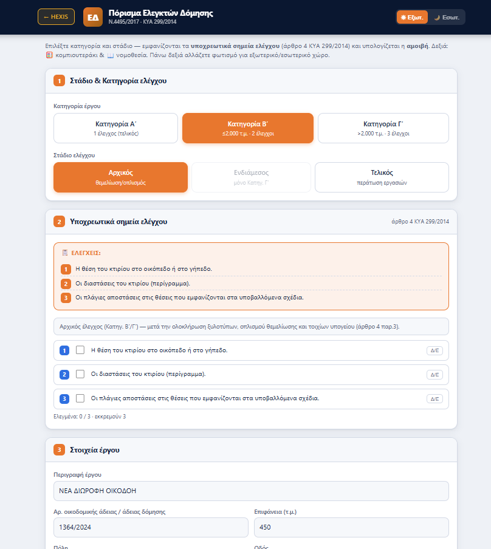
Τσεκάρεις κάθε σημείο ελέγχου (με επιλογή Δ/Ε όπου δεν εφαρμόζεται), συμπληρώνεις τα στοιχεία του έργου, και παράγεται το πλήρες πόρισμα — χωρίς παραλείψεις πεδίων.
Νομοθεσία
Όλη η πολεοδομική νομοθεσία, κωδικοποιημένη σε καρτέλες: Κώδικας Ταγαρά Ν.5306/2026 (481 άρθρα — ενσωματώνει ΝΟΚ, εκτός σχεδίου, αυθαίρετα, χρήσεις γης, οικοδομικές άδειες, ήδη ενημερωμένος με ν.5317/2026), ΝΟΚ 4067/12, Ν.4495 Αυθαίρετα, Κτιριοδομικός, Αιγιαλός & Ρέματα, Πυροπροστασία, Δασικά, Κτηματολόγιο και πίνακας Αντιστοιχίσεων παλαιών–νέων άρθρων.
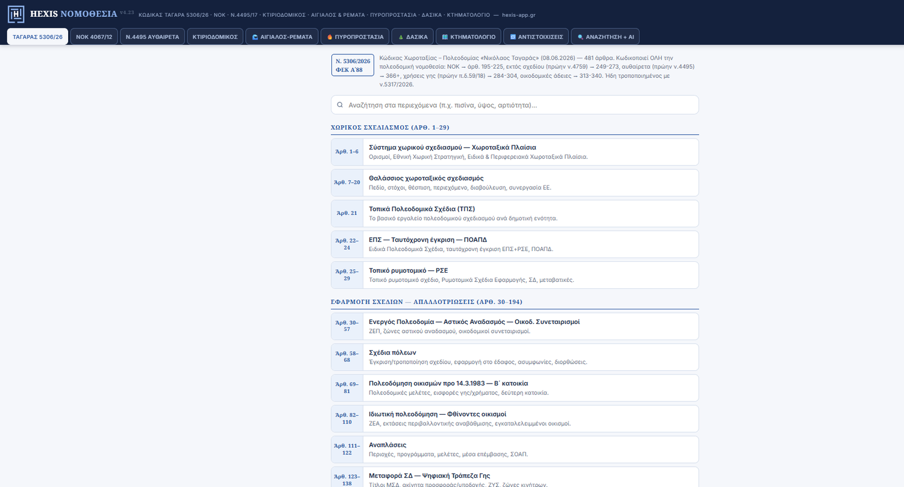
Κάθε ενότητα έχει αναζήτηση στα περιεχόμενα (π.χ. «πισίνα», «ύψος», «αρτιότητα»), και η καρτέλα Αναζήτηση + AI απαντά σε φυσική γλώσσα — ρωτάς όπως θα ρωτούσες συνάδελφο και παίρνεις απάντηση με παραπομπές στα ακριβή άρθρα.
Κόστος Άδειας
Πλήρης κοστολόγηση οικοδομικής άδειας σε καρτέλες: Έργο → Προϋπολογισμός → Αμοιβές → Φόροι → ΕΦΚΑ → Χρονοδιάγραμμα → Έγγραφα → Εξαγωγή. Καταχωρείς ιδιοκτήτες με ποσοστά (ΑΦΜ, ΔΟΥ) και επιφάνειες ανά χρήση από τον κατάλογο ΤΕΕ (ΕΤΑ και συντελεστές Σ.Ε. κατά ΥΑ ΦΕΚ 56/2012) — η συμβατική αξία υπολογίζεται ζωντανά ανά γραμμή.
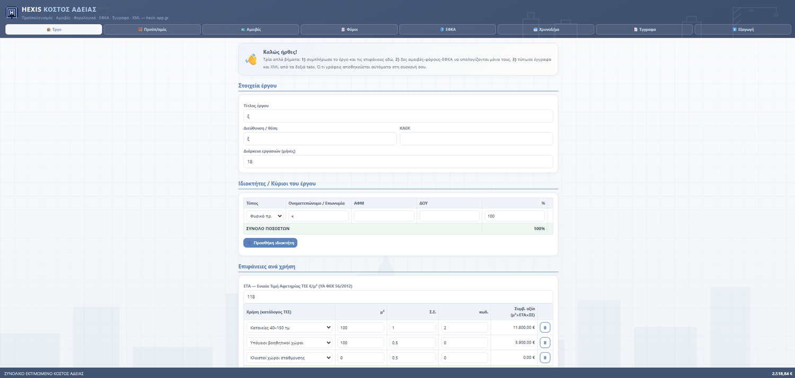
Το συνολικό εκτιμώμενο κόστος εμφανίζεται μόνιμα στο κάτω μέρος και ενημερώνεται με κάθε αλλαγή. Στο τέλος τυπώνεις έγγραφα (συμφωνητικά, ΣΑΥ/ΦΑΥ, ΥΔ) και εξάγεις XML για το e-Άδειες. Ό,τι γράφεις αποθηκεύεται αυτόματα στη συσκευή σου.
HEXIS Terrain
Από KML/KMZ (διαδρομές ή σημεία από Google Earth) σε τοπογραφικό υπόβαθρο ΕΓΣΑ΄87 (EPSG:2100): πύκνωση διαδρομής με βήμα της επιλογής σου, υψόμετρα από DEM (SRTM ~30 m) με δυνατότητα διόρθωσης Z, αυτόματο TIN και ισοϋψείς, και εξαγωγή έτοιμου DXF για το CAD σου.
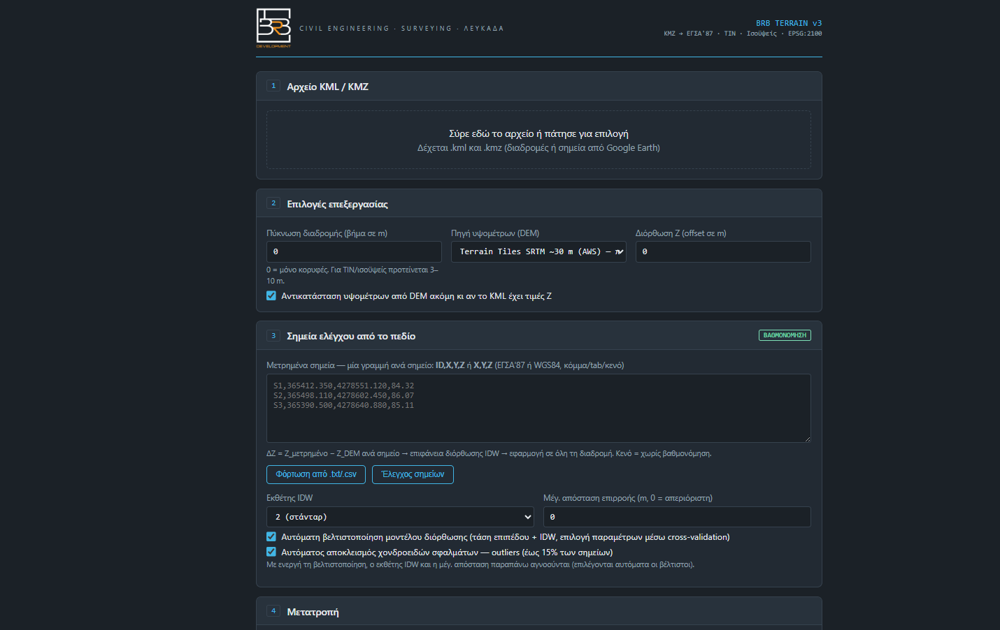
Το δυνατό του σημείο: η βαθμονόμηση με μετρημένα σημεία πεδίου. Επικολλάς σημεία ελέγχου (ID,X,Y,Z σε ΕΓΣΑ΄87 ή WGS84) και το εργαλείο υπολογίζει επιφάνεια διόρθωσης IDW, με αυτόματη βελτιστοποίηση μοντέλου (cross-validation) και αποκλεισμό χονδροειδών σφαλμάτων — ώστε το DEM να «κουμπώσει» στις δικές σου μετρήσεις.
Συχνές ερωτήσεις & Υποστήριξη
Δεν βλέπω τη νέα έκδοση
Κλείσε εντελώς την εφαρμογή (αφαίρεσέ την από τις πρόσφατες) και άνοιξέ την ξανά. Αν υπάρχει νεότερη έκδοση, εμφανίζεται banner «Διαθέσιμη νέα έκδοση» — πάτησε «Ενημέρωση τώρα». Η τρέχουσα έκδοση φαίνεται στο κάτω μέρος της αρχικής.
Ο συνεργάτης δεν βλέπει το έργο
Βεβαιώσου ότι έκανε εγγραφή με το ίδιο ακριβώς email που καταχώρησες στην Πρόσβαση — η βούλα δίπλα του πρέπει να είναι πράσινη.
Το βίντεο δεν ανεβαίνει
Μέγιστο 50MB — τράβα σε 1080p αντί για 4K, ή στείλε μικρότερο απόσπασμα.
Ξέχασα να τοποθετήσω πινέζα
Πάτησε ✏️ στην καταγραφή, επίλεξε κάτοψη, τοποθέτησε την πινέζα και αποθήκευσε.
Πώς διαγράφω έργο;
Μόνο από υπολογιστή (PC), με επιβεβαίωση πληκτρολόγησης του ονόματος — για να μη συμβεί ποτέ κατά λάθος από το κινητό στο εργοτάξιο. Και αν συμβεί, το Αντίγραφο ασφαλείας το επαναφέρει.
Δουλεύουν τα εργαλεία χωρίς internet;
Ναι — τα εργαλεία πεδίου λειτουργούν offline, εφόσον τα έχεις ανοίξει με σύνδεση τουλάχιστον μία φορά την τελευταία εβδομάδα.
Τι γίνεται όταν λήξει ένα add-on;
Το εργαλείο κλειδώνει και το ανανεώνεις με ένα πάτημα από τη σελίδα του. Τα δεδομένα σου δεν χάνονται ποτέ.
Επικοινωνία
BRB Development MON IKE · Τηλέφωνο: +30 693 322 6324 (κλήση, WhatsApp, Viber) · Email: brb.develop@gmail.com · Λευκάδα, Ελλάδα. Απαντάμε συνήθως εντός 24 ωρών.